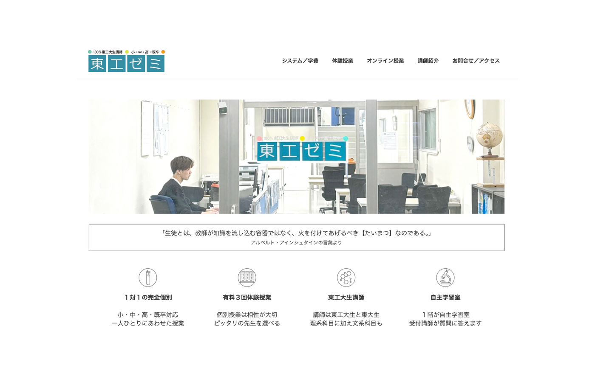

東大生と東科大生の講師が集まる個別指導塾「東工ゼミ」のホームページ制作を担当しました。WordPressを用いて、塾の雰囲気や強みが伝わる、安心感のあるシンプルなデザインを心がけました。
URL
https://tokozemi.securesite.jp/
担当
デザイン・コーディング・WordPress構築
サイトの目的
塾の認知度向上と新規生徒の獲得
ターゲット
生徒とその保護者
デザインについて
学習塾のホームページは、保護者や生徒が第一歩を踏み出す判断材料になるため、塾のシステムや雰囲気を視覚的・直感的に理解できる設計を心がけました。写真や講師紹介を通じて信頼感を醸成し、誰にでも見やすいシンプルなデザインとレイアウトを採用しています。
また、スマートフォンからの閲覧を重視し、モバイル対応と情報整理に力を入れました。SEO対策も施し、検索流入の向上も実現しています。
制作過程
制作過程では塾長と密に打ち合わせを重ね、要望を言語化して具体的に落とし込む作業を行いました。約三ヶ月の期間をかけて、WordPressを用いたサイトを立ち上げ、現在も保守・改善を継続しています。この経験を通じて、技術力だけでなく、ユーザー視点で価値を設計する力と、クライアントと協働する姿勢を身につけることができました。